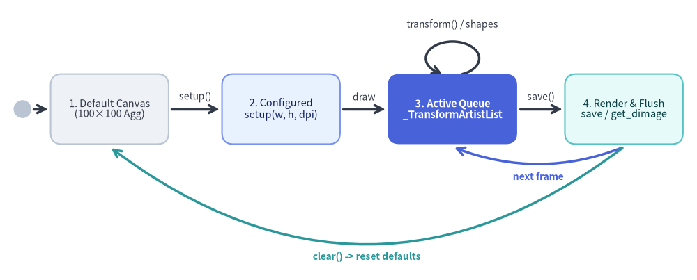
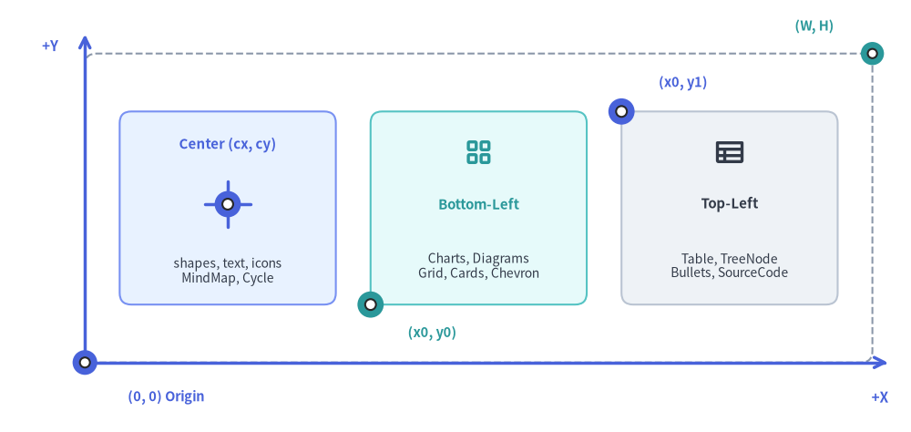
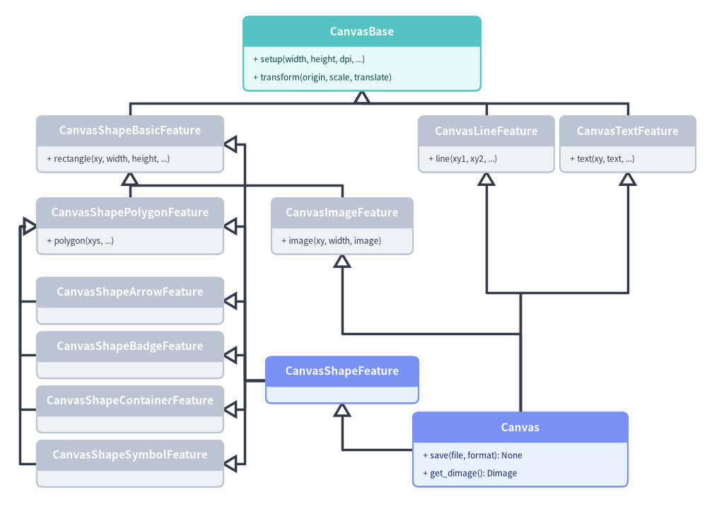

Canvas Lifecycle & Coordinate System
At the core of Drawlib sits the Canvas Engine (_core/l4_canvas), which abstracts Matplotlib figures, patches, and physical DPI scaling behind a deterministic Cartesian coordinate plane.
This chapter details the Canvas lifecycle state machine, the Cartesian coordinate space, Drawlib's four-part coordinate anchor model, and the 10-mixin cooperative inheritance hierarchy in _core/l4_canvas/_canvas.py.

Source Code
from drawlib.canvas import save, setup
from drawlib.diagrams.state import InitialState, State, StateDiagram
from drawlib.styles import Colors, Styles
setup(width=124, height=50)
sd = StateDiagram(
node_style=Styles.Neutral.patch(text_size=10.5),
edge_style=Styles.DarkBold,
edge_text_style=Styles.Dark.patch(text_size=10.0),
margin=2.0,
)
init = sd.add(InitialState(radius=1.5), xy=(4.0, 30.5))
s_default = sd.add(
State(
"1. Default Canvas\n(100×100 Agg)",
width=21.0,
height=12.5,
style=Styles.Neutral.patch(text_size=10.5),
),
xy=(19.5, 30.5),
)
s_config = sd.add(
State(
"2. Configured\nsetup(w, h, dpi)",
width=21.0,
height=12.5,
style=Styles.PrimaryNeutral.patch(text_size=10.5),
),
xy=(50.0, 30.5),
)
s_queue = sd.add(
State(
"3. Active Queue\n_TransformArtistList",
width=23.0,
height=12.5,
style=Styles.PrimaryFlat.patch(text_color=Colors.White, text_size=10.5),
),
xy=(80.5, 30.5),
)
s_render = sd.add(
State(
"4. Render & Flush\nsave / get_dimage",
width=21.0,
height=12.5,
style=Styles.SecondaryNeutral.patch(text_size=10.5),
),
xy=(111.0, 30.5),
)
sd.connect(init, s_default, routing="direct", padding=0.5)
sd.connect(s_default, s_config, label="setup()", routing="direct", padding=0.5)
sd.connect(s_config, s_queue, label="draw", routing="direct", padding=0.5)
sd.connect(
s_queue,
s_queue,
label="transform() / shapes",
side="top",
loop_width=9.5,
loop_height=6.0,
)
sd.connect(s_queue, s_render, label="save()", routing="direct", padding=0.5)
# Shallow inner return arc (next frame) vs deep outer reset arc (clear)
sd.connect(
s_render,
s_queue,
label="next frame",
start_side="bottom",
end_side="bottom",
routing="curved",
bend=-0.20,
style=Styles.PrimaryBold,
text_style=Styles.PrimaryBold.patch(text_size=10.0),
padding=0.5,
)
sd.connect(
s_render,
s_default,
label="clear() -> reset defaults",
start_side="bottom",
end_side="bottom",
routing="curved",
bend=-0.38,
style=Styles.SecondaryBold,
text_style=Styles.SecondaryBold.patch(text_size=10.0),
padding=0.5,
)
sd.draw(xy=(0.0, 0.0))
save()
1. Concept: Pure Cartesian Plane ((0, 0) at Bottom-Left)
Screen-oriented graphics APIs (HTML5 Canvas, SVG, Pillow, OpenCV) place (0, 0) at the top-left corner with +Y pointing downward. While convenient for raster scanlines, inverted Y coordinates complicate geometry math, bar/line chart baselines, and counter-clockwise angle calculations.
Drawlib standardizes on a mathematical Cartesian coordinate plane:
- Origin
(0, 0)sits at the bottom-left corner of the canvas. +Xincreases rightward from0towidth(W).+Yincreases upward from0toheight(H).- Angles follow counter-clockwise trigonometry ($0^\circ$ East, $90^\circ$ North) modulo $360^\circ$.

Source Code
from drawlib.canvas import save, setup
from drawlib.icons import phosphor
from drawlib.lines import line
from drawlib.shapes import circle, rectangle
from drawlib.styles import Styles
from drawlib.text import text
setup(width=118, height=56)
# Simulated Canvas Boundary: X in [11, 113], Y in [9, 49]
rectangle((62.0, 29.0), width=102.0, height=40.0, style=Styles.MutedDashed.patch(shape_r=1.5))
# +X and +Y Axes
line((11.0, 9.0), (11.0, 51.5), arrow_head="->", style=Styles.PrimaryBold)
text((6.5, 50.0), "+Y", style=Styles.PrimaryBold.patch(text_size=11.0))
line((11.0, 9.0), (115.0, 9.0), arrow_head="->", style=Styles.PrimaryBold)
text((114.0, 4.5), "+X", style=Styles.PrimaryBold.patch(text_size=11.0))
# Origin (0, 0) & Top-Right (W, H) high-contrast bullseye markers
circle((11.0, 9.0), radius=1.6, style=Styles.PrimaryFlat)
circle((11.0, 9.0), radius=0.65, style=Styles.White)
text((21.5, 4.5), "(0, 0) Origin", style=Styles.PrimaryBold.patch(text_size=10.5))
circle((113.0, 49.0), radius=1.5, style=Styles.SecondaryFlat)
circle((113.0, 49.0), radius=0.6, style=Styles.White)
text((105.5, 52.5), "(W, H)", style=Styles.SecondaryBold.patch(text_size=10.5))
# 1. Center Anchor (cx, cy) — X: [15.5, 43.5], Y: [16.5, 41.5]
rectangle((29.5, 29.0), width=28.0, height=25.0, style=Styles.PrimaryNeutral.patch(shape_r=1.5))
text((29.5, 37.2), "Center (cx, cy)", style=Styles.PrimaryBold.patch(text_size=10.8))
line((26.5, 29.5), (32.5, 29.5), style=Styles.PrimaryBold)
line((29.5, 26.5), (29.5, 32.5), style=Styles.PrimaryBold)
circle((29.5, 29.5), radius=1.7, style=Styles.PrimaryFlat)
circle((29.5, 29.5), radius=0.7, style=Styles.White)
text((29.5, 20.8), "shapes, text, icons\nMindMap, Cycle", style=Styles.Dark.patch(text_size=10.0))
# 2. Bottom-Left Anchor (x0, y0) — X: [48.0, 76.0], Y: [16.5, 41.5]
rectangle((62.0, 29.0), width=28.0, height=25.0, style=Styles.SecondaryNeutral.patch(shape_r=1.5))
phosphor.squares_four((62.0, 36.2), width=4.2, style=Styles.SecondaryBold)
text((62.0, 29.5), "Bottom-Left", style=Styles.SecondaryBold.patch(text_size=10.8))
text((62.0, 21.5), "Charts, Diagrams\nGrid, Cards, Chevron", style=Styles.Dark.patch(text_size=10.0))
circle((48.0, 16.5), radius=1.7, style=Styles.SecondaryFlat)
circle((48.0, 16.5), radius=0.7, style=Styles.White)
text((56.0, 12.8), "(x0, y0)", style=Styles.SecondaryBold.patch(text_size=10.5))
# 3. Top-Left Anchor (x0, y1) — X: [80.5, 108.5], Y: [16.5, 41.5]
rectangle((94.5, 29.0), width=28.0, height=25.0, style=Styles.Neutral.patch(shape_r=1.5))
phosphor.table((94.5, 36.2), width=4.2, style=Styles.DarkBold)
text((94.5, 29.5), "Top-Left", style=Styles.DarkBold.patch(text_size=10.8))
text((94.5, 21.5), "Table, TreeNode\nBullets, SourceCode", style=Styles.Dark.patch(text_size=10.0))
circle((80.5, 41.5), radius=1.7, style=Styles.PrimaryFlat)
circle((80.5, 41.5), radius=0.7, style=Styles.White)
text((88.5, 45.2), "(x0, y1)", style=Styles.PrimaryBold.patch(text_size=10.5))
save()
2. Positioning: Four-Part Coordinate Anchor Architecture
Rather than forcing every visual abstraction into a single awkward origin, Drawlib aligns each component family with its natural geometric anchor and exposes explicit align overrides where appropriate:
| Anchor Mode | Modules & Components | Coordinate Semantics |
|---|---|---|
1. Center (cx, cy) |
shapes.*, text.*, icons.*, images.image(), radial SmartArts (MindMapNode, Cycle), and diagram nodes (d.add(node, xy=(cx, cy))) |
Places the geometric center of the element at (cx, cy), making rotation, icon centering, and arrow targeting symmetric. |
2. Bottom-Left (x0, y0) |
Rectangular SmartArts (ChevronProcess, CardList, GridLayout, BoxList, Pyramid, KpiCards, Roadmap, Panel, GeoMap, *Calendar), all charts.*, and diagrams.*.draw(xy=(x0, y0)) / NodeGroup |
Places the minimum corner of [x0, x0 + w] × [y0, y0 + h] at (x0, y0), growing rightward (+X) and upward (+Y). |
3. Top-Left (x0, y1) |
Flow-down SmartArts (Table, TreeNode, BulletPoints, SourceCode) |
Places the top-left corner at (x0, y1) so variable-length rows, tree branches, and code lines expand naturally downward (-Y). |
| 4. Dual Graph Coordinates | drawlib.graph (*.get_layout()) |
Layout results expose both node.xy (center (cx, cy) for primitives/diagram nodes) and node.bottom_left ((x0, y0) for nested containers). |
To center a bottom-left anchored component of width $w$ horizontally on a canvas of width $W$, either pass align="center" with xy=(W / 2, H / 2) or compute $x_0 = (W - w) / 2$.
3. Details: L4 Canvas Mixin Hierarchy & Transform Engine
3.1. Cooperative 10-Mixin Diamond Inheritance (_core/l4_canvas/_canvas.py)
The singleton canvas = Canvas() in _core/l4_canvas/_canvas.py is assembled via cooperative Python multiple inheritance across CanvasBase (_base.py) and 10 specialized feature mixins:
- Direct
CanvasBaseSubclasses:CanvasShapeBasicFeature(_shapes/_basic.py): Foundational geometric and radial patches (rectangle,circle,ellipse,arc,wedge).CanvasLineFeature(_line.py): Straight, curved, arc, and quadratic/cubic Bezier strokes (line,lines,line_curved,line_arc,line_bezier1,line_bezier2,lines_curved,lines_bezier).CanvasTextFeature(_text.py): Horizontal and vertical typography (text,text_vertical).
- Subclasses of
CanvasShapeBasicFeature:CanvasShapePolygonFeature(_shapes/_polygon.py): Vertex and path shapes (triangle,parallelogram,trapezoid,rhombus,regularpolygon,star,plaque,polygon,shape).CanvasImageFeature(_image.py): Raster/PIL rendering viaimage(xy, width, image, *, style=None)— inherits fromCanvasShapeBasicFeatureso optional image borders reuseself.rectangle(...).
- 4 Specialized Shape Mixins Inheriting from
CanvasShapePolygonFeature:CanvasShapeArrowFeature(_shapes/_arrow.py):arrow,arrow_polyline,arrow_arc,arrow_l,arrow_u,chevron.CanvasShapeBadgeFeature(_shapes/_badge.py):bubblespeech,pin,tag,ribbon,shield,forbidden,checkmark,explosion.CanvasShapeContainerFeature(_shapes/_container.py):cylinder,cube,document,funnel,cloud,brace.CanvasShapeSymbolFeature(_shapes/_symbol.py):face,clock,sun,moon,heart,lightning,gear,math_symbol.
- Aggregator & Terminal Class:
CanvasShapeFeature(_shapes/__init__.py) combines all 6 shape mixins (43 shapes total), andCanvas(CanvasShapeFeature, CanvasLineFeature, CanvasTextFeature, CanvasImageFeature, CanvasBase)addssave(),show(), andget_dimage().

Source Code
from drawlib.canvas import save, setup
from drawlib.diagrams.class_diagram import ClassDiagram, ClassNode
from drawlib.styles import Styles
setup(width=125, height=90)
cd = ClassDiagram(
node_style=Styles.Neutral,
edge_style=Styles.DarkBold,
edge_text_style=Styles.Dark.patch(text_size=10.0),
margin=2.0,
)
# Row 1: Root Base Class
base = cd.add(
ClassNode("CanvasBase", width=42.0, style=Styles.SecondaryNeutral)
.add_method("setup", "width, height, dpi, ...")
.add_method("transform", "origin, scale, translate"),
xy=(64.0, 80.5),
)
# Row 2: Direct CanvasBase Subclasses (Basic, Line, Text)
shape_basic = cd.add(
ClassNode("CanvasShapeBasicFeature", width=33.0, style=Styles.Neutral)
.add_method("rectangle", "xy, width, height, ..."),
xy=(23.0, 64.5),
)
line_feat = cd.add(
ClassNode("CanvasLineFeature", width=24.0, style=Styles.Neutral)
.add_method("line", "xy1, xy2, ..."),
xy=(86.0, 64.5),
)
text_feat = cd.add(
ClassNode("CanvasTextFeature", width=24.0, style=Styles.Neutral)
.add_method("text", "xy, text, ..."),
xy=(111.0, 64.5),
)
# Row 3: Subclasses of CanvasShapeBasicFeature (Polygon on left, Image in middle)
shape_poly = cd.add(
ClassNode("CanvasShapePolygonFeature", width=32.98, style=Styles.Neutral)
.add_method("polygon", "xys, ..."),
xy=(23.01, 50.0),
)
image_feat = cd.add(
ClassNode("CanvasImageFeature", width=25.0, style=Styles.Neutral)
.add_method("image", "xy, width, image"),
xy=(60.5, 50.0),
)
# Left Spine: 4 Specialized Polygon Subclasses (aligned right=39.5, left=6.5)
shape_arrow = cd.add(ClassNode("CanvasShapeArrowFeature", width=33.0, style=Styles.Neutral), xy=(23.0, 36.8))
shape_badge = cd.add(ClassNode("CanvasShapeBadgeFeature", width=33.0, style=Styles.Neutral), xy=(23.0, 27.2))
shape_cont = cd.add(ClassNode("CanvasShapeContainerFeature", width=33.0, style=Styles.Neutral), xy=(23.0, 17.6))
shape_sym = cd.add(ClassNode("CanvasShapeSymbolFeature", width=33.0, style=Styles.Neutral), xy=(23.0, 8.0))
# Middle Aggregator & Bottom-Right Terminal Canvas
shape_feat = cd.add(
ClassNode("CanvasShapeFeature", width=27.0, style=Styles.PrimaryNeutral),
xy=(60.5, 22.8),
)
canvas_cls = cd.add(
ClassNode("Canvas", width=38.0, style=Styles.PrimaryNeutral)
.add_method("save", "file, format", "None")
.add_method("get_dimage", "", "Dimage"),
xy=(92.0, 10.5),
)
# 1. Direct CanvasBase children (shared horizontal bus y=72.7)
cd.connect(shape_basic, base, "inheritance", start_side="top", end_side="bottom")
cd.connect(line_feat, base, "inheritance", start_side="top", end_side="bottom")
cd.connect(text_feat, base, "inheritance", start_side="top", end_side="bottom")
# 2. CanvasShapeBasicFeature children (shared horizontal bus y=57.2)
cd.connect(shape_poly, shape_basic, "inheritance", start_side="top", end_side="bottom")
cd.connect(image_feat, shape_basic, "inheritance", start_side="top", end_side="bottom")
# 3. 4 Specialized Shape Mixins -> CanvasShapePolygonFeature (clean outer-left spine x=3.5)
cd.connect(shape_arrow, shape_poly, "inheritance", start_side="left", end_side="left")
cd.connect(shape_badge, shape_poly, "inheritance", start_side="left", end_side="left")
cd.connect(shape_cont, shape_poly, "inheritance", start_side="left", end_side="left")
cd.connect(shape_sym, shape_poly, "inheritance", start_side="left", end_side="left")
# 4. CanvasShapeFeature -> All 6 Shape Mixins (clean central spine x=43.25)
cd.connect(shape_feat, shape_basic, "inheritance", start_side="left", end_side="right")
cd.connect(shape_feat, shape_poly, "inheritance", start_side="left", end_side="right")
cd.connect(shape_feat, shape_arrow, "inheritance", start_side="left", end_side="right")
cd.connect(shape_feat, shape_badge, "inheritance", start_side="left", end_side="right")
cd.connect(shape_feat, shape_cont, "inheritance", start_side="left", end_side="right")
cd.connect(shape_feat, shape_sym, "inheritance", start_side="left", end_side="right")
# 5. Terminal Canvas -> Shape, Image, Line, Text
cd.connect(canvas_cls, shape_feat, "inheritance", start_side="left", end_side="bottom")
cd.connect(canvas_cls, image_feat, "inheritance", start_side="top", end_side="bottom")
cd.connect(canvas_cls, line_feat, "inheritance", start_side="top", end_side="bottom")
cd.connect(canvas_cls, text_feat, "inheritance", start_side="top", end_side="bottom")
cd.draw(xy=(0.0, 0.0))
save()
3.2. Physical 10.0-Inch Width & 720pt Typography Invariant
Rather than resizing physical figure width arbitrarily, CanvasBase locks FIGURE_WIDTH_INCHES = 10.0 (POINTS_PER_INCH = 72.0):
- Physical Dimensions: Figure width is fixed at $10.0\text{ in}$ across $[0, \text{width}]$, and figure height scales proportionally as $\text{height} \times 10.0 / \text{width}$ inches at
dpipixels per inch (DEFAULT_DPI = 100). - Typographic Scaling Formula: Because $10.0\text{ in} = 720\text{ pt}$, any
Style(text_size=s)occupies $s \times \text{width} / 720$ logical canvas units vertically, and renders in browser CSS pixels at: $$\text{Browser Font Size (px)} = \text{text_size} \times \frac{\text{Displayed Width (px)}}{720.0}$$ On compact canvases (width = 100..125),text_size = 10.5–12.0matches16pxHTML body text without manual font math.
3.3. Affine Transform Stack & _TransformArtistList
High-level components (SmartArts, Charts, Diagrams) support proportional scale and local coordinate offsets without rewriting primitive math:
canvas.transform(origin=(ox, oy), scale=s, translate=(dx, dy)): Computes cumulative similarity parameters $(s_{\text{comp}}, tx_{\text{comp}}, ty_{\text{comp}})$ and pushes them onto_transform_stack, popping cleanly in afinally:block._TransformArtistList: Subclasseslist[Artist]onself._artists. Whenever a primitive appends or extends Matplotlib patches (PathPatch,FancyArrowPatch,Circle,Polygon),Text, orAnnotationBboximages,_TransformArtistListintercepts the artist and scales vertices, radii, stroke widths, arrowmutation_scale, font sizes, and imageOffsetImagezoom in-place.
3.4. Eager Initialization, Multi-Frame Flush & Animation Hook
- Eager Default Plane:
CanvasBase.__init__()immediately invokesself.setup(), creating a ready-to-use $100 \times 100$ canvas on module import. - Non-Destructive Multi-Frame Flush: Calling
save(),show(), orget_dimage()assigns sequentialzordervalues (0..N-1), strips margins (tight_layout()+subplots_adjust(0, 1, 0, 1)), rasterizes or serializes SVG (injecting<!-- drawlib-svg-fonts: ... -->metadata), and detaches artists fromself._ax(_remove_artists_from_ax()). - Animation & Full Reset: When
drawlib.anim.Animationis active (_active_animation),save()delegates multi-frameWebP/APNGencoding to the animation controller and clears_artists. Callingclear()closes the Matplotlib figure and re-initializesCanvasBaseback to system defaults.
Next, inspect immutable color/style validation in Types & Style Models.